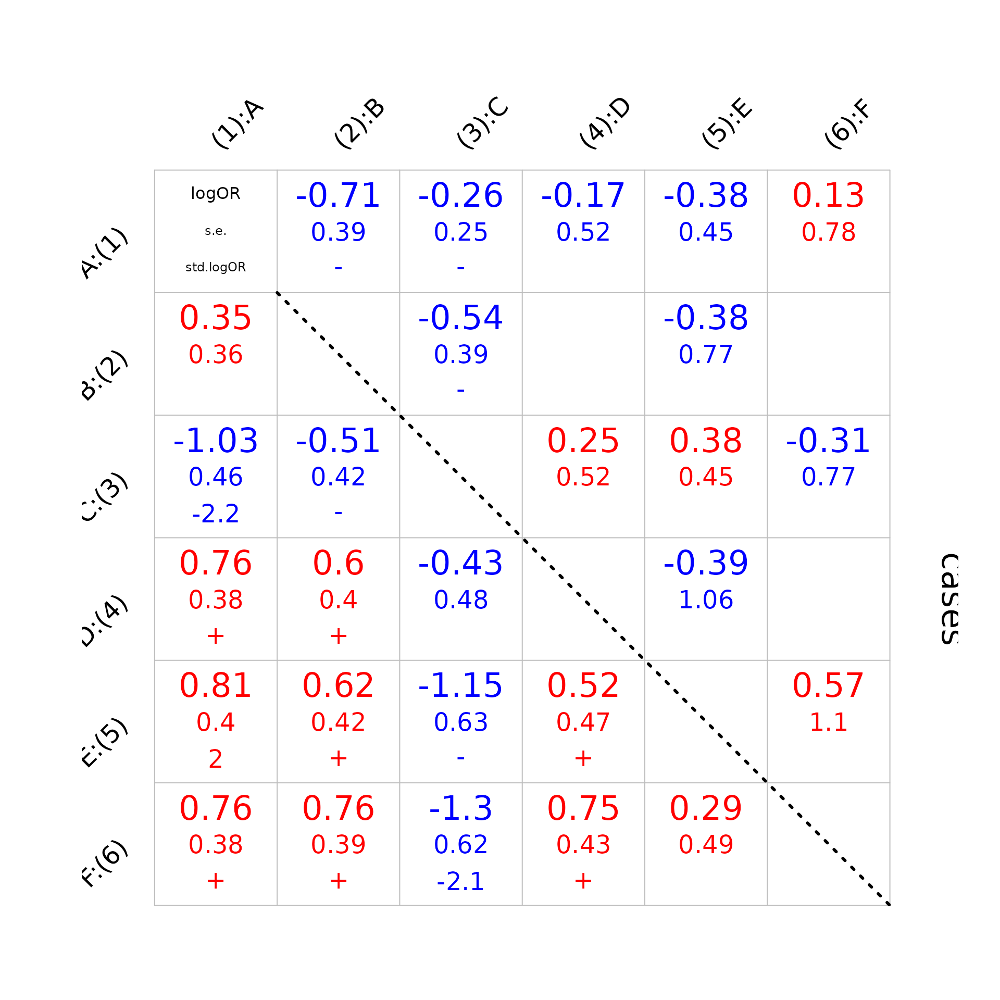

Vignettes for baker: An R package for fitting nested partially latent class models
Zhenke Wu
December 21, 2023
Source:vignettes/baker_demo.Rmd
baker_demo.RmdThis is a simple vignette; please see here for the more complete version.
Introduction
In this vignette, a sharply truncated sampling procedure is used to
demonstrate use of the ‘baker’ package tools. Because we built the
vignette locally, please check the inst/doc/ for the actual
vignette files. We commented many of the following code segments because
their running time is high on the CRAN server.
The data for the illustration are related to pathogen categorization in pneumonia. We will simulate the presence or absence of pathogens of these pathogens measured with error.
fname = file.path(
"example_data",
"pathogen_category_simulation.csv")
fname = system.file(
fname,
package = "baker")
demodat = read.csv(fname, stringsAsFactors = FALSE)
kable(head(demodat))| pathogen | pathogen_type |
|---|---|
| A | B |
| B | V |
| C | B |
| D | V |
| E | V |
| F | B |
Setup and Simulate Measurements
We first simulate data using NPLCM. We simulate data for controls and
cases separately. Among controls, the disease class is termed “no
infection”. To model the dependence among pathogen measurements, Wu et
al 2016, Biostatistics introduced subclasses to characterize such
dependence. In this simulation, we assume there are two subclasses
(\(K=2\)). Among cases, there are a few
disease classes that represent the true lung infections by pathogens
\(1, 2, ..., L\) and another class
called “None-of-the-above”. We don’t get to observe these disease
classes and wish to use measurements peripheral to the lung to infer for
each individual the probabilities of each pathogen infecting the lung as
well as the fraction of pneumonia cases caused by each pathogen. We
again assume two subclasses are nested within each of \(L+1\) disease classes. Controls and cases
in a given disease class fall into subclasses with likely different
probabilities, which we term as subclass weights; We assume the subclass
weights for controls is \(\boldsymbol{\nu}=(0.5,0.5)\) and for cases
\(\boldsymbol{\nu}\) for which the R
code below chose a particular pair of values
c(curr_mix,1-curr_mix).
# Note: the example will only run 100 Gibbs sampling steps to save computing time.
# To produce useful posterior inferences, please modify "mcmc_options" as follows
# "n.itermcmc" to 50000
# "n.burnin" to 10000,
# "n.thin" to 40,
working_dir <- tempdir() # <-- create a temporary directory.
#curd = getwd()
#randname = paste(curd, basename(tempfile()), sep="/") # need absolute path
#dir.create(randname)
#working_dir = randname
K.true <- 2 # no. of latent subclasses in actual simulation.
# If eta = c(1,0), K.true is effectively 1.
J <- 6 # no. of pathogens.
N <- 250 # no. of cases/controls.
# case subclass weight (five values):
subclass_mix_seq <- c(0,0.25,0.5,0.75,1)
NREP <- 100
MYGRID <- expand.grid(list(rep = 1:NREP, # data replication.
iter = seq_along(subclass_mix_seq),# mixing weights.
k_fit = c(1,2), # model being fitted: 1 for pLCM; >1 for npLCM.
scn = 3:1) # index for different truth; see "scn_collection.R".
)
n_seed <- nrow(unique(MYGRID[,-3]))
seed_seq <- rep(1:n_seed,times=length(unique(MYGRID[,3])))
SEG <- 1 # The value could be 1 to nrow(MYGRID)=3000; here we just simulate one data set.
scn <- MYGRID$scn[SEG]
k_fit <- 2#MYGRID$k_fit[SEG]
iter <- MYGRID$iter[SEG]
rep <- MYGRID$rep[SEG]
# current parameters:
curr_mix <- subclass_mix_seq[iter]
lambda <- c(0.5,0.5) #c(curr_mix,1-curr_mix)
eta <- c(curr_mix,1-curr_mix)
# set fixed simulation sequence:
seed_start <- 20161215
set.seed(seed_start+seed_seq[SEG])
if (scn == 3){
ThetaBS_withNA <- cbind(c(0.95,0.95,0.55,0.95,0.95,0.95),#subclass 1.
c(0.95,0.55,0.95,0.55,0.55,0.55))#subclass 2.
PsiBS_withNA <- cbind(c(0.4,0.4,0.05,0.2,0.2,0.2), #subclass 1.
c(0.05,0.05,0.4,0.05,0.05,0.05)) #subclass 2.
}
if (scn == 2){
ThetaBS_withNA <- cbind(c(0.95,0.9,0.85,0.9,0.9,0.9), #subclass 1.
c(0.95,0.9,0.95,0.9,0.9,0.9)) #subclass 2.
PsiBS_withNA <- cbind(c(0.3,0.3,0.15,0.2,0.2,0.2), #subclass 1.
c(0.15,0.15,0.3,0.05,0.05,0.05))#subclass 2.
}
if (scn == 1){
ThetaBS_withNA <- cbind(c(0.95,0.9,0.9,0.9,0.9,0.9),#subclass 1.
c(0.95,0.9,0.9,0.9,0.9,0.9))#subclass 2.
PsiBS_withNA <- cbind(c(0.25,0.25,0.2,0.15,0.15,0.15),#subclass 1.
c(0.2,0.2,0.25,0.1,0.1,0.1)) #subclass 2.
}
# the following paramter names are set using names in the 'baker' package:
set_parameter <- list(
cause_list = c(LETTERS[1:J]),
etiology = c(0.5,0.2,0.15,0.05,0.05,0.05),# same length as cause_list.
pathogen_BrS = LETTERS[1:J],
meas_nm = list(MBS = c("MBS1")), # a single source of Bronze Standard (BrS) data.
Lambda = lambda, #ctrl mix (subclass weights).
Eta = t(replicate(J,eta)), #case mix; # of rows equals length(cause_list).
PsiBS = PsiBS_withNA,
ThetaBS = ThetaBS_withNA,
Nu = N, # control sample size.
Nd = N # case sample size.
)
# # visualize pairwise log odds ratios for cases and controls when eta changes
# # from 0 to 1. In the following simulation, we just use one value: eta=0.
# example("compute_logOR_single_cause")
simu_out <- simulate_nplcm(set_parameter)
data_nplcm <- simu_out$data_nplcmExploratory data analysis
Below, we visualize a matrix of pairwise log odds ratios (LOR) for cases (upper) and controls (lower). LOR is at the top of the cell. Below it, its standard error is in smaller type, using the same color as the LOR. Then the estimate is divided by its standard error. We put the actual value when the Z-statistics has an absolute value greater than 2; a plus (red) or minus (blue) if between 1 and 2; blank otherwise.
# specify cause list:
cause_list <- set_parameter$cause_list
# specify measurements:
# bronze-standard measurements:
patho_BrS_MBS1 <- set_parameter$pathogen_BrS
BrS_object_1 <- make_meas_object(patho_BrS_MBS1,"MBS","1","BrS",cause_list)
# please use ?make_meas_object to see the measurement standards.
# pairwise log odds ratio plot:
pathogen_display <- BrS_object_1$patho
plot_logORmat(data_nplcm,pathogen_display,1)## == Visualizing pairwise log odds ratios for bronze-standard data set: 1 : MBS1 . ==
Model specification
m_opt1 <- list(likelihood = list(cause_list = cause_list, # <---- fitted causes.
k_subclass = k_fit, # <---- no. of subclasses.
Eti_formula = "~ 0", # <---- only apply FPR formula to specified slice of measurements; if not default to the first slice.
FPR_formula = list(MBS1 = "~0")), # <---- etiology regression formula.
use_measurements = c("BrS"), # <---- which measurements to use to inform etiology
prior = list(Eti_prior = overall_uniform(1, cause_list) , # <--- etiology prior.
TPR_prior = list(
BrS = list(info = "informative",
input = "direct_beta_param",
val = list(
MBS1 = list(alpha = list(rep(6,length(set_parameter$pathogen_BrS))),
beta = list(rep(2,length(set_parameter$pathogen_BrS)))
)
)
)
)# <---- TPR prior.
)
)
model_options <- m_opt1
assign_model(model_options,data_nplcm)## $num_slice
## MBS MSS MGS
## 1 0 0
##
## $nested
## [1] TRUE
##
## $regression
## $regression$do_reg_Eti
## [1] FALSE
##
## $regression$do_reg_FPR
## MBS1
## FALSE
##
## $regression$is_discrete_predictor
## $regression$is_discrete_predictor$Eti
## [1] FALSE
##
## $regression$is_discrete_predictor$FPR
## MBS1
## FALSE
##
##
##
## $BrS_grp
## [1] FALSE
##
## $SS_grp
## [1] FALSEFitting the model
# date stamp for analysis:
Date <- gsub("-", "_", Sys.Date())
# include stratification information in file name:
dated_strat_name <- file.path(working_dir,
paste0("scn_",scn,"_mixiter_",iter))
if (dir.exists(dated_strat_name)) {
unlink(dated_strat_name, force = TRUE)
}
# create folder
dir.create(dated_strat_name)
fullname <- dated_strat_name
# for finer scenarios, e.g., different types of analysis applicable to the
# same data set. Here we just perform one analysis:
result_folder <- file.path(
fullname,
paste0("rep_", rep, "_kfit_",
model_options$likelihood$k_subclass))
dir.create(result_folder)
# options for MCMC chains:
mcmc_options <- list(
individual.pred = !TRUE,
ppd = TRUE,
n.chains = 1,
n.itermcmc = as.integer(200), #50000
n.burnin = as.integer(100), #10000
n.thin = 1, #50
result.folder = result_folder,
bugsmodel.dir = result_folder
)
# Record the settings of current analysis:
# data clean options:
fname = file.path(
"example_data",
"pathogen_category_simulation.csv")
fname = system.file(
fname,
package = "baker")
global_patho_taxo_dir = fname
clean_options <- list(
BrS_objects = make_list(BrS_object_1), # <---- all bronze-standard measurements.
patho_taxo_dir = global_patho_taxo_dir,
allow_missing = FALSE)
# place the nplcm data and cleaning options into the results folder
dput(data_nplcm,file.path(mcmc_options$result.folder,"data_nplcm.txt"))
dput(clean_options,file.path(mcmc_options$result.folder,"data_clean_options.txt"))
gs <- nplcm(data_nplcm, model_options, mcmc_options)Visualizations
result_folder <- mcmc_options$result.folderplot data, prior, and posteriors for all causative pathogens:
suppressWarnings(plot(gs, bg_color = NULL))model checking by comparing observed pairwise log odds ratios (LOR)
We compare observed LOR to the posterior predictive distributions of pairwise LOR; The numbers are (predicted LOR - observed LOR)/ s.e. (posterior predictive distribution of LOR); The closer to zero the better.
plot_check_pairwise_SLORD(result_folder, slice=1)model checking by comparing observed frequencies of binary patterns to the model-predicted ones
dir_list <- as.list(c(result_folder))
plot_check_common_pattern(dir_list,slice_vec =c(1,1))